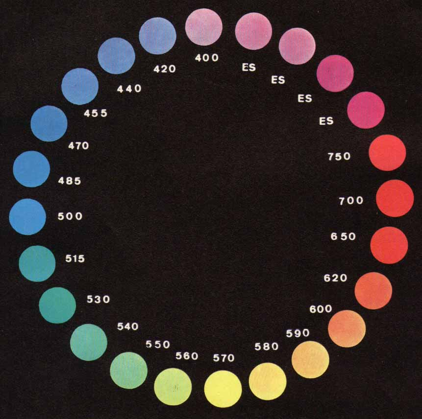

Cercando in rete l'argomento "spettroscopia UV-visibile" si trova tutto quello che io ometterò di dire in questa sede, la quale, come ormai ben si sa, è dedicata quasi categoricamente alla realizzazione pratica di quello che la teoria propone.
Solo due parole minime introduttive al mio esperimento (anche hardware!) che seguirà: la spettroscopia è una disciplina che riguarda quelle tecniche con le quali è possibile ottenere informazioni sulle proprietà strutturali dei corpi studiando l’interazione della materia con l’energia elettromagnetica, cioè la luce, visibile o meno.
Alcuni punti fissi:
- L'energia di un'onda elettromagnetica è direttamente proporzionale alla sua frequenza, quindi quanto maggiore è la lunghezza d’onda di una radiazione, tanto minore è l’energia ad essa associata.
- La luce visibile è quella parte dello spettro elettromagnetico a cui è sensibile l’occhio umano, caratterizzata da lunghezze d’onda che vanno da 380 nm a 780 nm.
- Le lunghezze d’onda della luce visibile sono in relazione con i colori che noi percepiamo; il rosso è caratterizzato da lunghezze d'onda più elevate, e viceversa per il viola, che avrà qundi una maggior energia.
- L’UV si estende al di sotto dei 380nm, l'IR al di sopra dei 780 nm.
- Quando una radiazione elettromagnetica interagisce con la materia si ha in genere trasferimento di energia dalla radiazione alla materia (assorbimento), cui segue la restituzione di energia sotto diverse forme (emissione).
- La radiazione incidente di intensità I0 viene in parte assorbita dal campione e la radiazione uscente I1 ha intensità minore.
- Una legge fondamentale di questa disciplina è la legge di Lambert-Beer:
A = ε l c
dove A è l’assorbanza di una soluzione, ε è un coefficiente che dipende dal tipo di sostanza, l è la lunghezza del cammino ottico e c è la concentrazione c della soluzione.
Qusta legge è di fondamentale importanza per l’analisi quantitativa, poiché evidenzia una dipendenza lineare (entro certi limiti) dell’assorbanza dalla concentrazione dell’analita, che può pertanto essere determinata.
Conoscendo l’assorbanza di soluzioni standard, si può risalire alla concentrazione del campione in esame.
Le tecniche spettrometriche basate sul fenomeno dell’assorbimento vengono realizzate con un dispositivo che comprende:
• Una sorgente di radiazioni (luce, visibile o meno).
• Un monocromatore (un dispositivo che permette di scegliere la radiazione della lunghezza d'onda voluta).
• Un rivelatore (misura la radiazione che ha attraversato il campione rispetto a quella incidente).
Le transizioni energetiche indotte dalle radiazioni UV- visibili con la materia coinvolgono gli elettroni più esterni di legame della sostanza in esame e l’eccitazione degli elettroni di valenza richiede energie tanto più elevate quanto più è grande la separazione fra i livelli elettronici di partenza e di arrivo delle transizioni.
Il colore è una sensazione fisiologica prodotta dal nostro cervello quando elabora i segnali generati nell’occhio dalle radiazioni elettromagnetiche che lo colpiscono dopo l'interazione tra una sorgente luminosa e un oggetto.

Se un raggio di luce policromatica illumina un oggetto che ne può assorbire una parte, la radiazione che giunge all’occhio contiene solo le lunghezze d’onda che non sono state assorbite, cioè le radiazioni complementari.Ciò si può vedere bene col Circolo di Ostwald:
se l’oggetto, illuminato da luce policromatica, assorbe prevalentemente nella regione del giallo-rosso, vengono trasmesse le radiazioni nella regione del blu e quindi l’oggetto è percepito come blu (per esempio i sali di rame idrati, che appaiono azzurri).
Dopo questa doverosa premessa ULTRA-semplificata, ho provato a costruire un aggeggio che facesse vagamente quanto sopra:
→ dandogli in pasto una soluzione diluitissima di una certa sostanza, dovrà applicare la legge di Lambert-Beer e tirar fuori dei risultati interpretabili, non dal punto di vista assoluto e numerico (per questo scopo ci sono i veri spettroscopi UV-VIS-IR, per le corrispettive adeguate migliaia di euro) ma solo da quello di una misurazione relativa dell'assorbanza ad una certa lunghezza d'onda.
Vedremo pian piano come andrà a finire.
2 commenti